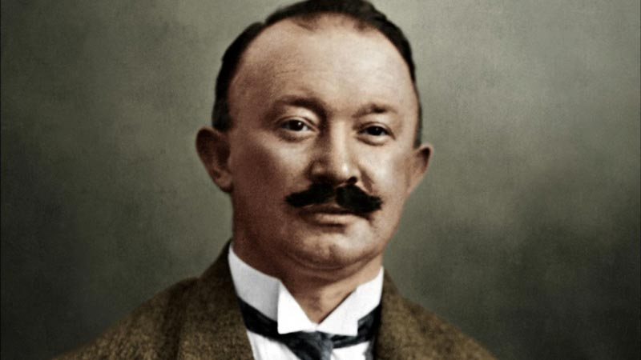
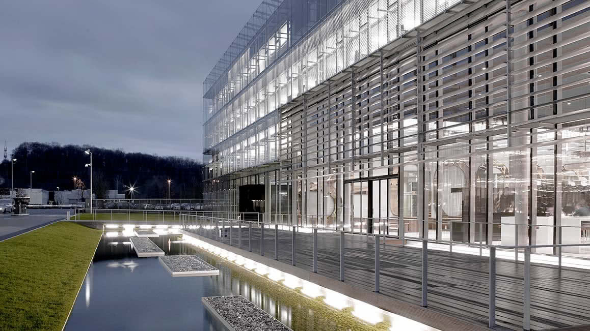
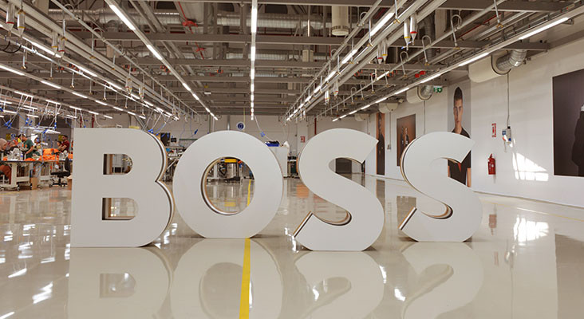
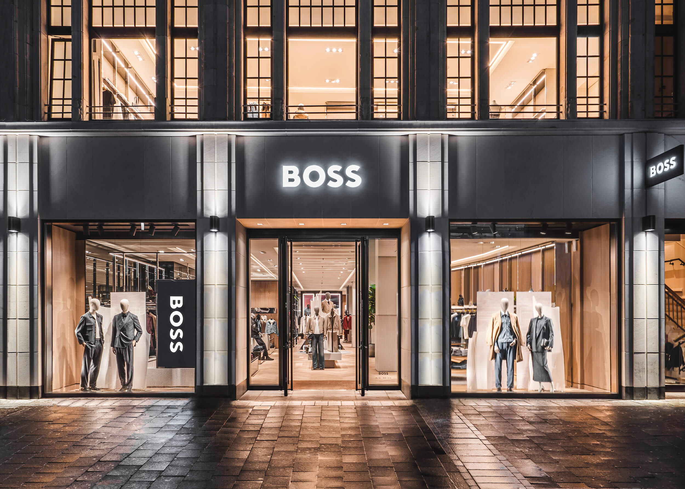
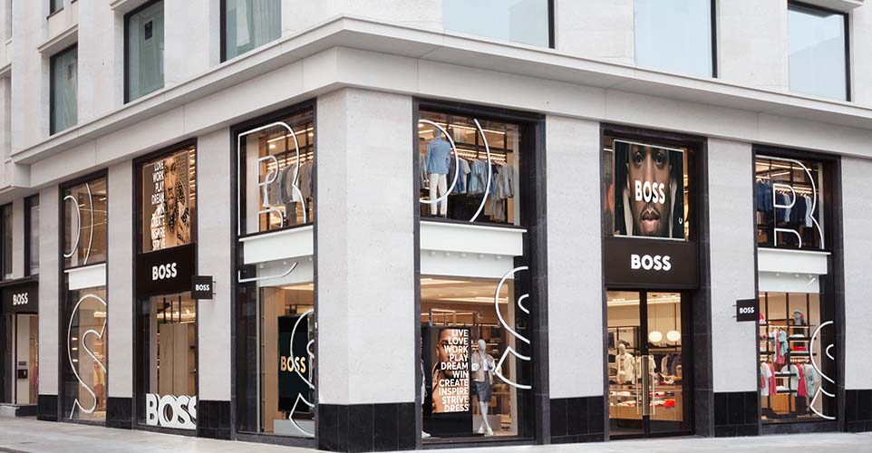
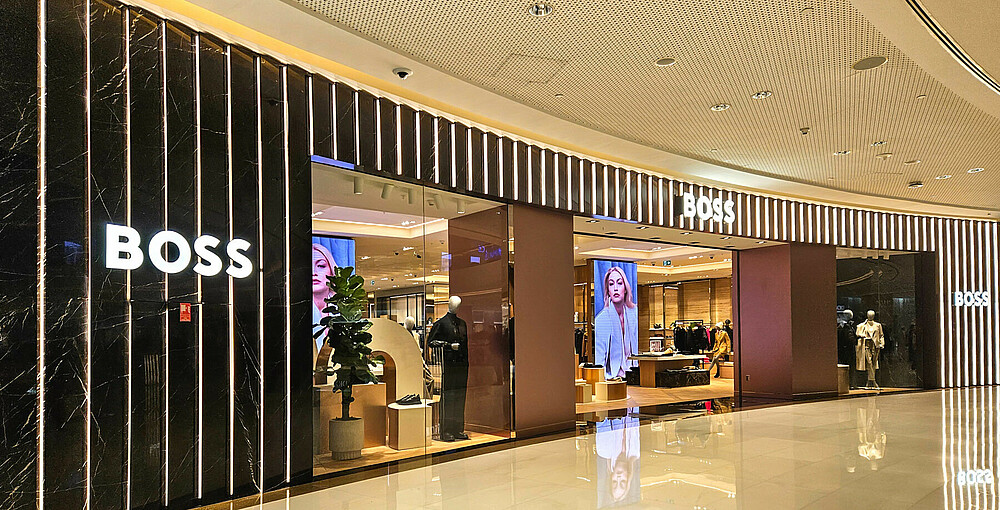
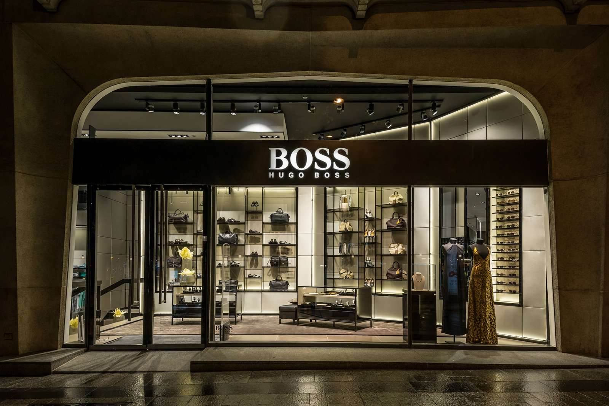
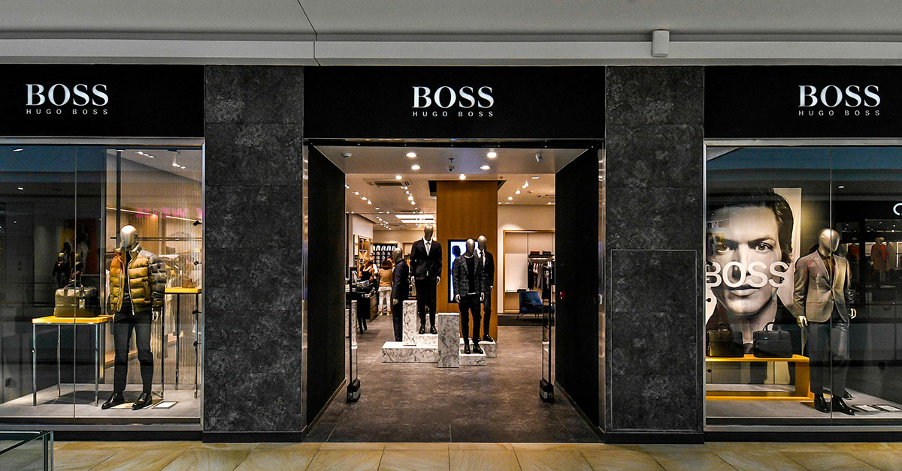

Hugo Ferdinand Boss, osnivač modne kuće Hugo Boss
Kompanija je osnovana početkom 1920-ih u nemačkom gradiću Metzingen, Baden--Württemberg. Osnivač je Hugo Ferdinand Boss koji je 1923. kreirao svoju prvu radionicu, a 1924. pokrenuo fabriku uz dvoje partnera. U početku se bavila izradom radne odeće — kaputi, kišne kabanice, sportska odeća, uniforme, pa sve do posteljine za industrijske primene.
U tridesetim godinama, firma je počela proizvodnju uniformi za razne državne organizacije, uključujući poštanske službe, policiju i kasnije nacističke organizacije. Posle Drugog svetskog rata, Boss je prošao kroz denacifikaciju: upravljanje preuzima njegov zet Eugen Holy, a kasnije — krajem šezdesetih — sinovi Jochen i Uwe Holy počinju da šire firmu međunarodno.
Do 1950-ih, kompanija je počela da radi gotova muška odela (ready-to-wear suits), a naznačavanje marke “Boss” počinje da postaje prepoznatljivo sredinom XX veka. Označavanje “Boss” kao zaštitni znak registrovano je 1977. godine.
Daniel Grieder je na čelu Hugo Boss AG od 1. juna 2021. godine.
Rođen je 1961. godine u Vašingtonu, D.C., ali je studirao u Cirihu na University of Applied Sciences in Business Administration (HWZ Zürich).
Još tokom školovanja pokrenuo je svoju prvu kompaniju — Max Trade Service AG (kasnije Madison Clothing Ltd.) — koja se bavila proizvodnjom i distribucijom odeće, uključujući renomirane međunarodne brendove kao što su Tommy Hilfiger, Pepe Jeans, Stone Island i CP Company za Švajcarsku, Austriju i Istočnu Evropu.
Godine iskustva provedene u modnoj industriji, posebno značajno u radu sa brendom Tommy Hilfiger: od funkcija u Evropi do globalnih pozicija, uključujući CEO Tommy Hilfiger Europe, a potom CEO Global i PVH Europe.
Pod njegovim vođstvom, Hugo Boss je pokrenuo strategiju pod nazivom CLAIM 5, koja ima za cilj da ojača brendove (BOSS i HUGO), poveća relevantnost kompanije na tržištu, unapredi iskustvo potrošača, modernizuje distribuciju i marketing, te ubrza digitalizaciju.
Daniel Grieder je takođe dobio produžen mandat: njegov ugovor je obnovljen da traje do 31. decembra 2028. godine.

Sedište kompanije Hugo Boss u Mecingenu, Nemačka
Sedište Hugo Boss AG nalazi se u Mecingen, u pokrajini Baden-Württemberg, Nemačka.
Kompanija ima veliki kampus, sa površinom od oko 175.000 m², gde su locirane kancelarije, prezentacioni prostori, proizvodni objekti, skladišta, show-room-ovi i drugi prostori vezani za operativne i korporativne funkcije.
Između 2021. i 2025. godine planirana je investicija od preko 100 miliona evra u modernizaciju kampusa — za nove kancelarije, bolje uslove za zaposlene, digitalizaciju, renoviranje showroom-a, izgradnju
Novi objekat kancelarijskog tipa koji može da primi oko 350 radnih mesta planiran je da bude završen 2025. godine.
Jedan od važnih ciljeva je održivost – nova zgrada će težiti DGNB platinum sertifikatu (nemački standard održive gradnje).

Danas je Hugo Boss istinski svetski brend – prisutan u više od 120 zemalja i dostupan kroz mrežu od preko 8.000 maloprodajnih objekata širom sveta. Naša kolekcija se može pronaći u najprestižnijim modnim metropolama, kao i u online prodavnicama koje opslužuju više od 70 tržišta, čineći nas dostupnim gotovo svuda gde postoji potreba za vrhunskim stilom
Od flagship prodavnica u Londonu, Tokiju i Dubaiju, preko luksuznog outlet grada u našem rodnom Metzingenu, pa sve do ekskluzivnih lokacija u Njujorku, Milanu i Parizu – Hugo Boss gradi iskustvo kupovine koje prevazilazi samu odeću. Naš cilj je da svaki kontakt sa brendom bude doživljaj luksuza, inovacije i elegancije, bez obzira na to da li ste u srcu Evrope, Amerike ili Azije.

Dizeldorf, Nemačka

London, UK

Dubai, UAE

Pariz, Francuska

Split, Hrvatska